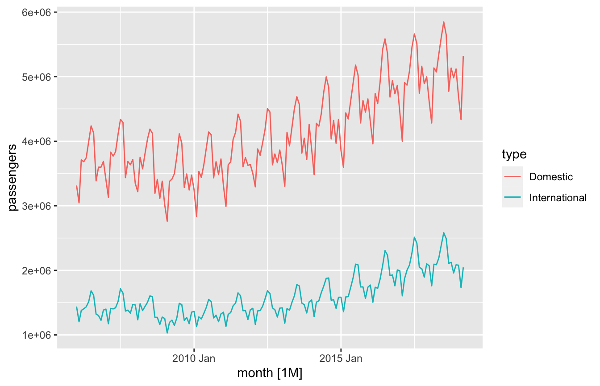
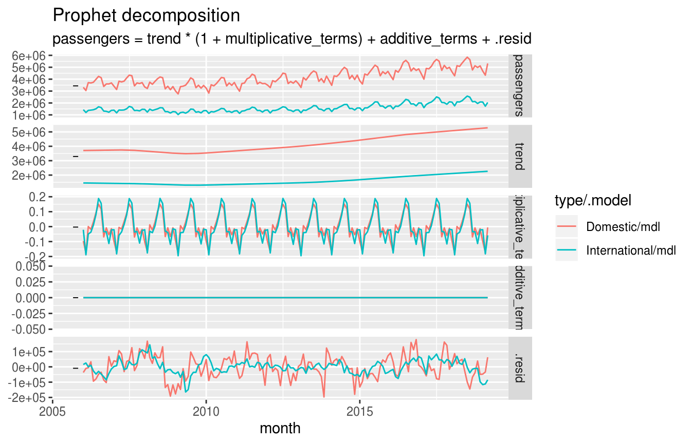
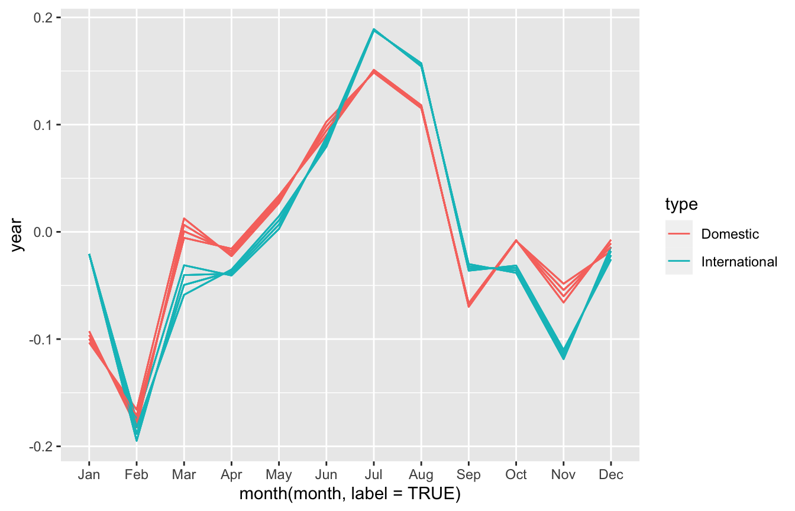

Introduction to the fable interface for prophet
intro.Rmdlibrary(tsibble)
library(fable.prophet)
#> Loading required package: Rcpp
#> Loading required package: fabletools
#>
#> Attaching package: 'fabletools'
#> The following object is masked from 'package:stats':
#>
#> decomposeThe fable.prophet package provides an interface allowing the prophet forecasting procedure to be used within the fable framework. This allows you to use prophet to forecast multiple time series within the same workflow as other forecasting models. The interface provides a compact and flexible model specification, allowing you to create prophet models using a model formula.
Tidy temporal data
The tidy temporal data structure tsibble is used to represent time series data. A tsibble is extends the data.frame used in the prophet package with the concepts of index and key variables. The index refers to the column of data containing the observations measurement time (the ds column in prophet). The key variables are used to uniquely identify each time series in the dataset, allowing separate prophet models to be applied on each time series.
For this analysis let’s compare the number of domestic and international passengers passing through Los Angeles International Airport. The data is published by data.lacity.org and available on data.gov. The data is re-hosted in this package’s GitHub repository for reproducibility.
# Read in the data
lax_passengers <- read.csv("https://raw.githubusercontent.com/mitchelloharawild/fable.prophet/master/data-raw/lax_passengers.csv")
# Tidy and summarise the data for comparison of international and domestic passenger counts
library(dplyr)
library(lubridate)
lax_passengers <- lax_passengers %>%
mutate(datetime = mdy_hms(ReportPeriod)) %>%
group_by(month = yearmonth(datetime), type = Domestic_International) %>%
summarise(passengers = sum(Passenger_Count)) %>%
ungroup()
lax_passengers
#> # A tibble: 318 x 3
#> month type passengers
#> <mth> <fct> <int>
#> 1 2006 Jan Domestic 3315937
#> 2 2006 Jan International 1440222
#> 3 2006 Feb Domestic 3045963
#> 4 2006 Feb International 1204192
#> 5 2006 Mar Domestic 3711057
#> 6 2006 Mar International 1379237
#> 7 2006 Apr Domestic 3683040
#> 8 2006 Apr International 1404834
#> 9 2006 May Domestic 3743141
#> 10 2006 May International 1434267
#> # … with 308 more rowsThe data.frame created contains two time series, one for domestic and another for international passenger counts. A data.frame can be converted to a tsibble using as_tsibble() and specifying the index and key variable(s). In this case the time variable (the index) is date, and the type variable is the key as it uniquely identifies each time series.
# Convert to a tsibble
library(tsibble)
lax_passengers <- as_tsibble(lax_passengers, index = month, key = type)
lax_passengers
#> # A tsibble: 318 x 3 [1M]
#> # Key: type [2]
#> month type passengers
#> <mth> <fct> <int>
#> 1 2006 Jan Domestic 3315937
#> 2 2006 Feb Domestic 3045963
#> 3 2006 Mar Domestic 3711057
#> 4 2006 Apr Domestic 3683040
#> 5 2006 May Domestic 3743141
#> 6 2006 Jun Domestic 3994798
#> 7 2006 Jul Domestic 4236581
#> 8 2006 Aug Domestic 4128492
#> 9 2006 Sep Domestic 3386421
#> 10 2006 Oct Domestic 3598030
#> # … with 308 more rowsWhen using fable.prophet, it is not necessary to have the time column named ds and the response column called y.
Data exploration
Before modelling, we should first have a look at the data. There are many ways in which time series data can be visualised, and as a tsibble is in a tabular format you can easily create informative graphics with ggplot2. The easiest way to have a quickly see your data is with a time series plot via autoplot().

Each series appears to have a piecewise linear trend and multiplicative seasonality, which we should consider when creating our prophet model. The feasts and sugrrants packages provide additional plotting tools for time series data.
Prophet modelling
A prophet model is specified using the prophet() function. If you’ve loaded both prophet and fable.prophet packages, you should refer to this function explicitly with fable.prophet::prophet(). This function uses a formula based model specification (y ~ x), where the left of the formula specifies the response variable, and the right specifies the model’s predictive terms.
A prophet model supports piecewise linear or exponential growth (trend), additive or multiplicative seasonality, holiday effects and exogenous regressors. More details about how to specify these terms can be found in the help file, ?prophet.
To specify a linear growth and a annual multiplicative seasonal pattern for the passengers data above, you would use:
prophet(passengers ~ growth("linear") + season("year", type = "multiplicative"))
#> <prophet model definition>You can also use prophet’s automatic model specification by not specifying the right hand side, i.e. prophet(passengers).
The model() function is used to estimate a specified model using the data.
fit <- lax_passengers %>%
model(
mdl = prophet(passengers ~ growth("linear") + season("year", type = "multiplicative")),
)
fit
#> # A mable: 2 x 2
#> # Key: type [2]
#> type mdl
#> <fct> <model>
#> 1 Domestic <prophet>
#> 2 International <prophet>You can see that two prophet models have been estimated, one for each of the time series in the dataset.
Prophet components
The components of an estimated prophet model can be extracted using the components() function. This allows you to visualise the terms of the model.
components(fit)
#> # A dable: 318 x 9 [1M]
#> # Key: type, .model [2]
#> # Prophet Decomposition: passengers = trend * (1 + multiplicative_terms) +
#> # additive_terms + .resid
#> type .model month passengers additive_terms multiplicative_…
#> <fct> <chr> <mth> <int> <dbl> <dbl>
#> 1 Dome… mdl 2006 Jan 3315937 0 -0.0962
#> 2 Dome… mdl 2006 Feb 3045963 0 -0.177
#> 3 Dome… mdl 2006 Mar 3711057 0 0.000769
#> 4 Dome… mdl 2006 Apr 3683040 0 -0.0180
#> 5 Dome… mdl 2006 May 3743141 0 0.0317
#> 6 Dome… mdl 2006 Jun 3994798 0 0.0946
#> 7 Dome… mdl 2006 Jul 4236581 0 0.150
#> 8 Dome… mdl 2006 Aug 4128492 0 0.117
#> 9 Dome… mdl 2006 Sep 3386421 0 -0.0687
#> 10 Dome… mdl 2006 Oct 3598030 0 -0.00806
#> # … with 308 more rows, and 3 more variables: trend <dbl>, year <dbl>,
#> # .resid <dbl>The resulting decomposition table (a dable) can be visualised using autoplot().

The models for each series appear to have similar characteristics, with the domestic passenger counts being more seasonal than international counts.
As a dable is in a tabular structure, it is also possible to use ggplot2 or other plotting libraries to make more sophisticated graphics. Here I produce a plot of seasonality that is wrapped over each year, yielding a very similar result to prophet::prophet_plot_components().
library(ggplot2)
components(fit) %>%
ggplot(aes(
# Plot the month of the time index (month) on the x-axis
x = month(month, label = TRUE),
# Plot the annual seasonal term (year) on the y-axis
y = year,
# Colour by the passenger type
colour = type,
# Draw separate lines for each type and year
group = interaction(type, year(month))
)) +
geom_line()
Peak monthly passenger counts seem to occur in July, and the minimum is in February (although be wary of differences in the number of days in each month!). You can see that the model’s seasonal term changes slightly from year to year, especially for domestic passengers in March and November.
Forecasting with prophet
Forecasts from an estimated model can be produced using the forecast() function. If the model has not used exogenous regressors, the number of forecasts (forecast horizon) can be easily specified using the h argument. If exogenous regressors have been used, these will need to be included in a tsibble passed to the new_data argument.
To forecast three years into the future, we can set h = "3 years".
fc <- fit %>%
forecast(h = "3 years")
fc
#> # A fable: 72 x 5 [1M]
#> # Key: type, .model [2]
#> type .model month passengers .distribution
#> <fct> <chr> <mth> <dbl> <dist>
#> 1 Domestic mdl 2019 Apr 5217502. sim(=dbl[1000])
#> 2 Domestic mdl 2019 May 5495443. sim(=dbl[1000])
#> 3 Domestic mdl 2019 Jun 5812394. sim(=dbl[1000])
#> 4 Domestic mdl 2019 Jul 6153169. sim(=dbl[1000])
#> 5 Domestic mdl 2019 Aug 5992971. sim(=dbl[1000])
#> 6 Domestic mdl 2019 Sep 4999765. sim(=dbl[1000])
#> 7 Domestic mdl 2019 Oct 5344708. sim(=dbl[1000])
#> 8 Domestic mdl 2019 Nov 5142208. sim(=dbl[1000])
#> 9 Domestic mdl 2019 Dec 5322615. sim(=dbl[1000])
#> 10 Domestic mdl 2020 Jan 4873109. sim(=dbl[1000])
#> # … with 62 more rowsThe point forecasts are provided in the passengers column, and a set of simulated future paths are stored in the .distribution column. To visualise these forecasts, we can again use the autoplot() function.

Evaluating accuracy
Much like any model in the fable framework, model and forecast accuracy can be evaluated using the accuracy() function.
accuracy(fit)
#> # A tibble: 2 x 10
#> type .model .type ME RMSE MAE MPE MAPE MASE ACF1
#> <fct> <chr> <chr> <dbl> <dbl> <dbl> <dbl> <dbl> <dbl> <dbl>
#> 1 Domestic mdl Traini… -181. 77251. 62175. -0.0664 1.56 0.343 0.440
#> 2 Internation… mdl Traini… 171. 46292. 34798. -0.0683 2.26 0.357 0.729When comparing accuracy between series on different scales, it is important to use a scale independent accuracy measure. A summary of accuracy measures can be found in the Forecasting: Principles and Practice - Evaluating forecast accuracy. An appropriate accuracy measure for comparing these models is the mean absolute scaled error (MASE). We can interpret the model for domestic passenger counts as being slightly more accurate on the training data as it has a slightly lower MASE.
Comparing in-sample (training) accuracy may misrepresent the accuracy of a model, as it is based on predicting one-step ahead using all available data. In many senses this is unrealistic, and there are other approaches such as out-of-sample (test) accuracy and cross-validation which can be used. The freely available online textbook also details how to compute these more realistic accuracy measures.